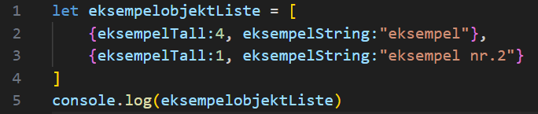
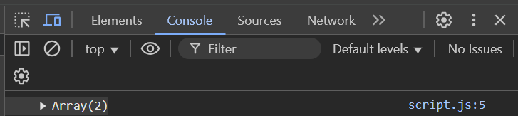
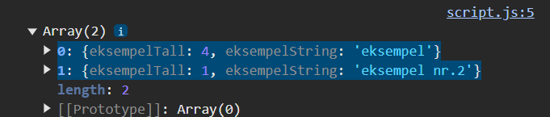

Elvebakken-hacket
Assistenten din har nå fullført listen med mistenkte
Du har nå fått vite at hackeren har samme fornavn som en annen mistenkt. Finn de mistenkte som deler fornavn. (Du kan enten velge å lage en ny liste eller fjerne de andre mistenkte).
Et tips er å sortere listen etter fornavn først
Liste med mistenkte
let mistenkte = [
{fornavn:"Hans", etternavn:"Mikkelsen", fodselsaar:1989, minutter:2},
{fornavn:"Kari", etternavn:"Larsen", fodselsaar:1975, minutter:10},
{fornavn:"Ole", etternavn:"Johansen", fodselsaar:1962, minutter:20},
{fornavn:"Lise", etternavn:"Svensen", fodselsaar:2001, minutter:5},
{fornavn:"Per", etternavn:"Andersen", fodselsaar:1958, minutter:15},
{fornavn:"Anna", etternavn:"Nielsen", fodselsaar:1972, minutter:3},
{fornavn:"Thomas", etternavn:"Olsen", fodselsaar:1985, minutter:12},
{fornavn:"Sofia", etternavn:"Berg", fodselsaar:1995, minutter:8},
{fornavn:"Daniel", etternavn:"Hansen", fodselsaar:2010, minutter:1},
{fornavn:"Eva", etternavn:"Pettersen", fodselsaar:2005, minutter:4},
{fornavn:"Johan", etternavn:"Lund", fodselsaar:1983, minutter:11},
{fornavn:"Mette", etternavn:"Eriksen", fodselsaar:1965, minutter:9},
{fornavn:"Anders", etternavn:"Olsen", fodselsaar:1990, minutter:6},
{fornavn:"Ida", etternavn:"Magnussen", fodselsaar:2003, minutter:2},
{fornavn:"Lars", etternavn:"Jensen", fodselsaar:1988, minutter:7},
{fornavn:"Ingrid", etternavn:"Jacobsen", fodselsaar:1978, minutter:3},
{fornavn:"Elias", etternavn:"Hald", fodselsaar:2000, minutter:0},
{fornavn:"Clara", etternavn:"Sorensen", fodselsaar:1970, minutter:5},
{fornavn:"Simon", etternavn:"Fjord", fodselsaar:1999, minutter:13},
{fornavn:"Nora", etternavn:"Lind", fodselsaar:2012, minutter:6},
{fornavn:"Fredrik", etternavn:"Skadberg", fodselsaar:1982, minutter:4},
{fornavn:"Thea", etternavn:"Hagen", fodselsaar:2007, minutter:10},
{fornavn:"Mathias", etternavn:"Dahl", fodselsaar:1992, minutter:8},
{fornavn:"Siri", etternavn:"Nilsen", fodselsaar:1963, minutter:9},
{fornavn:"Jonathan", etternavn:"Sæther", fodselsaar:1979, minutter:15},
{fornavn:"Hanna", etternavn:"Mortensen", fodselsaar:2001, minutter:3},
{fornavn:"Matias", etternavn:"Holm", fodselsaar:1986, minutter:7},
{fornavn:"Astrid", etternavn:"Lykke", fodselsaar:1994, minutter:1},
{fornavn:"Kjetil", etternavn:"Kjæstad", fodselsaar:1974, minutter:20},
{fornavn:"Ragnhild", etternavn:"Vik", fodselsaar:1955, minutter:4},
{fornavn:"Magnus", etternavn:"Opsahl", fodselsaar:1987, minutter:12},
{fornavn:"Martine", etternavn:"Bakke", fodselsaar:2004, minutter:5},
{fornavn:"Tobias", etternavn:"Nilsen", fodselsaar:1991, minutter:2},
{fornavn:"Vilde", etternavn:"Blom", fodselsaar:1993, minutter:6},
{fornavn:"Andreas", etternavn:"Sund", fodselsaar:1981, minutter:10},
{fornavn:"Katrine", etternavn:"Sjaastad", fodselsaar:1969, minutter:8},
{fornavn:"Jonas", etternavn:"Bergström", fodselsaar:1960, minutter:3},
{fornavn:"Anniken", etternavn:"Myrhaug", fodselsaar:2006, minutter:14},
{fornavn:"Peder", etternavn:"Nystuen", fodselsaar:1998, minutter:0},
{fornavn:"Elise", etternavn:"Koll", fodselsaar:1984, minutter:21},
{fornavn:"Steinar", etternavn:"Aas", fodselsaar:1976, minutter:19},
{fornavn:"Rikke", etternavn:"Dahl", fodselsaar:1997, minutter:17},
{fornavn:"Bjørn", etternavn:"Estrup", fodselsaar:1957, minutter:9},
{fornavn:"Miriam", etternavn:"Stoltz", fodselsaar:2002, minutter:11},
{fornavn:"Kristian", etternavn:"Skåbu", fodselsaar:1980, minutter:5},
{fornavn:"Oda", etternavn:"Reed", fodselsaar:2008, minutter:4},
{fornavn:"Trygve", etternavn:"Voll", fodselsaar:1995, minutter:2},
{fornavn:"Miriam", etternavn:"Hval", fodselsaar:1973, minutter:15},
{fornavn:"Jakob", etternavn:"Gulbrandsen", fodselsaar:1989, minutter:10},
{fornavn:"Sophie", etternavn:"Bråten", fodselsaar:1996, minutter:6},
{fornavn:"Erik", etternavn:"Myresjø", fodselsaar:2001, minutter:3},
{fornavn:"Linda", etternavn:"Sogn", fodselsaar:1985, minutter:1},
{fornavn:"Håkon", etternavn:"Reinsberg", fodselsaar:1985, minutter:7},
{fornavn:"Adele", etternavn:"Schmidt", fodselsaar:1988, minutter:14},
{fornavn:"Nikolai", etternavn:"Norrviken", fodselsaar:1991, minutter:12},
{fornavn:"Karine", etternavn:"Norheim", fodselsaar:1993, minutter:5},
{fornavn:"Vincent", etternavn:"Bjerke", fodselsaar:1984, minutter:8},
{fornavn:"Tina", etternavn:"Marstrander", fodselsaar:1972, minutter:4},
{fornavn:"Selma", etternavn:"Hjelm", fodselsaar:2003, minutter:2},
{fornavn:"Oskar", etternavn:"Wilhelmsen", fodselsaar:1990, minutter:6},
{fornavn:"Vera", etternavn:"Engen", fodselsaar:2000, minutter:3},
{fornavn:"Marius", etternavn:"Budahl", fodselsaar:1982, minutter:0},
{fornavn:"Lotte", etternavn:"Fagerhøi", fodselsaar:1993, minutter:15},
{fornavn:"Tore", etternavn:"Birkeland", fodselsaar:1959, minutter:8},
{fornavn:"Stine", etternavn:"Kalstad", fodselsaar:1986, minutter:14},
{fornavn:"Aina", etternavn:"Bergheim", fodselsaar:2007, minutter:5},
{fornavn:"Sindre", etternavn:"Sundberg", fodselsaar:1987, minutter:20},
{fornavn:"Torill", etternavn:"Vik", fodselsaar:1961, minutter:6},
{fornavn:"Runar", etternavn:"Holt", fodselsaar:2009, minutter:9},
{fornavn:"Freja", etternavn:"Riise", fodselsaar:2004, minutter:4},
{fornavn:"Kåre", etternavn:"Kolberg", fodselsaar:1980, minutter:1},
{fornavn:"Anita", etternavn:"Falck", fodselsaar:1974, minutter:11},
{fornavn:"Sebastian", etternavn:"Kjensli", fodselsaar:1991, minutter:5},
{fornavn:"Kristina", etternavn:"Woien", fodselsaar:1984, minutter:8},
{fornavn:"Alfred", etternavn:"Hammer", fodselsaar:2005, minutter:3},
{fornavn:"Cecilie", etternavn:"Spikkeland", fodselsaar:1978, minutter:9},
{fornavn:"Philip", etternavn:"Haugen", fodselsaar:1981, minutter:2},
{fornavn:"Isak", etternavn:"Austad", fodselsaar:2008, minutter:1},
{fornavn:"Tilda", etternavn:"Olson", fodselsaar:1992, minutter:6},
{fornavn:"Felix", etternavn:"Svendsen", fodselsaar:1986, minutter:12},
{fornavn:"Marte", etternavn:"Heggheim", fodselsaar:1971, minutter:3},
{fornavn:"Sander", etternavn:"Jørgensen", fodselsaar:1989, minutter:0},
{fornavn:"Ester", etternavn:"Gundersen", fodselsaar:2002, minutter:7},
{fornavn:"Ane", etternavn:"Nordahl", fodselsaar:2000, minutter:4},
{fornavn:"Snorre", etternavn:"Tangum", fodselsaar:1994, minutter:1},
{fornavn:"Maja", etternavn:"Eikrem", fodselsaar:1990, minutter:2},
{fornavn:"Simon", etternavn:"Myrvang", fodselsaar:1988, minutter:3},
{fornavn:"Martine", etternavn:"Myrset", fodselsaar:1975, minutter:5},
{fornavn:"Håvard", etternavn:"Heimdal", fodselsaar:1983, minutter:1},
{fornavn:"Oline", etternavn:"Nordby", fodselsaar:2004, minutter:15},
{fornavn:"Kristine", etternavn:"Særeid", fodselsaar:1996, minutter:10},
{fornavn:"Elias", etternavn:"Falken", fodselsaar:2011, minutter:0},
{fornavn:"Vera", etternavn:"Moen", fodselsaar:2002, minutter:12},
{fornavn:"Jonas", etternavn:"Ellingsen", fodselsaar:1989, minutter:3},
{fornavn:"Freya", etternavn:"Finstad", fodselsaar:1997, minutter:2},
{fornavn:"Dag", etternavn:"Holte", fodselsaar:1987, minutter:8},
{fornavn:"Milo", etternavn:"Hesjevik", fodselsaar:1966, minutter:14},
{fornavn:"Gina", etternavn:"Nysæter", fodselsaar:1992, minutter:4},
{fornavn:"Aksel", etternavn:"Brun", fodselsaar:1972, minutter:7},
{fornavn:"Selma", etternavn:"Hjerpa", fodselsaar:1999, minutter:5},
{fornavn:"Filippa", etternavn:"Skjelstad", fodselsaar:2003, minutter:1},
{fornavn:"Jakob", etternavn:"Vikdal", fodselsaar:1985, minutter:6},
{fornavn:"Sara", etternavn:"Hanssen", fodselsaar:1994, minutter:11},
{fornavn:"Oskar", etternavn:"Slettan", fodselsaar:1983, minutter:3},
{fornavn:"Tusja", etternavn:"Helge", fodselsaar:2010, minutter:5},
{fornavn:"Ane", etternavn:"Nyheim", fodselsaar:2006, minutter:0},
{fornavn:"Lene", etternavn:"Bakke", fodselsaar:1982, minutter:9},
{fornavn:"Henrik", etternavn:"Bjorheim", fodselsaar:1960, minutter:10},
{fornavn:"Stella", etternavn:"Hansen", fodselsaar:1991, minutter:8},
{fornavn:"Mia", etternavn:"Rud", fodselsaar:2000, minutter:4},
{fornavn:"Birk", etternavn:"Overland", fodselsaar:1979, minutter:1},
{fornavn:"Ruben", etternavn:"Osland", fodselsaar:1988, minutter:3},
{fornavn:"Elena", etternavn:"Dyrstad", fodselsaar:1995, minutter:10},
{fornavn:"Eva", etternavn:"Pedersen", fodselsaar:2007, minutter:5},
{fornavn:"Felix", etternavn:"Sand", fodselsaar:2001, minutter:7},
{fornavn:"Hilde", etternavn:"Kværnum", fodselsaar:1964, minutter:12},
{fornavn:"Magnus", etternavn:"Fjeld", fodselsaar:1999, minutter:5},
{fornavn:"Liv", etternavn:"Spangberg", fodselsaar:1986, minutter:3},
{fornavn:"Alva", etternavn:"Dahlberg", fodselsaar:1992, minutter:2},
{fornavn:"Morten", etternavn:"Stokke", fodselsaar:1978, minutter:4},
{fornavn:"Oda", etternavn:"Bjoran", fodselsaar:2005, minutter:15},
{fornavn:"Nikolaj", etternavn:"Johan", fodselsaar:1971, minutter:6},
{fornavn:"Rune", etternavn:"Streter", fodselsaar:1980, minutter:0},
{fornavn:"Kamilla", etternavn:"Hjelmeland", fodselsaar:1984, minutter:3},
{fornavn:"Petter", etternavn:"Vogt", fodselsaar:1965, minutter:7},
{fornavn:"Helle", etternavn:"Løken", fodselsaar:1993, minutter:10},
{fornavn:"Brage", etternavn:"Haukedal", fodselsaar:1996, minutter:2},
{fornavn:"Sondre", etternavn:"Olaisen", fodselsaar:1989, minutter:12},
{fornavn:"Trine", etternavn:"Randby", fodselsaar:1982, minutter:4},
{fornavn:"Line", etternavn:"Fjord", fodselsaar:1988, minutter:6},
{fornavn:"Even", etternavn:"Skoglund", fodselsaar:2000, minutter:14},
{fornavn:"Martine", etternavn:"Hoel", fodselsaar:1985, minutter:4},
{fornavn:"Kristofer", etternavn:"Nøkleby", fodselsaar:1970, minutter:8},
{fornavn:"Selma", etternavn:"Tafjord", fodselsaar:1994, minutter:1},
{fornavn:"Anine", etternavn:"Bakken", fodselsaar:2006, minutter:2},
{fornavn:"Karin", etternavn:"Alvheim", fodselsaar:1977, minutter:3},
{fornavn:"Marius", etternavn:"Eide", fodselsaar:1997, minutter:9},
{fornavn:"Rebekka", etternavn:"Flåten", fodselsaar:1984, minutter:5},
{fornavn:"Steinar", etternavn:"Lyche", fodselsaar:1986, minutter:2},
{fornavn:"Ylva", etternavn:"Husby", fodselsaar:2011, minutter:0},
{fornavn:"Håkon", etternavn:"Bønes", fodselsaar:1979, minutter:8},
{fornavn:"Ingar", etternavn:"Vik", fodselsaar:1981, minutter:12},
{fornavn:"June", etternavn:"Bøhn", fodselsaar:1994, minutter:5},
{fornavn:"Hildegunn", etternavn:"Gallefoss", fodselsaar:2002, minutter:14},
{fornavn:"Henriette", etternavn:"Tangen", fodselsaar:1989, minutter:1},
{fornavn:"Mats", etternavn:"Østby", fodselsaar:1982, minutter:6},
{fornavn:"Erica", etternavn:"Hølland", fodselsaar:2003, minutter:3},
{fornavn:"Kaja", etternavn:"Heggen", fodselsaar:1998, minutter:2},
{fornavn:"Viggo", etternavn:"Stabell", fodselsaar:1965, minutter:7},
{fornavn:"Nina", etternavn:"Flom", fodselsaar:1988, minutter:12},
{fornavn:"Edvard", etternavn:"Jåmas", fodselsaar:1976, minutter:9},
{fornavn:"Astrid", etternavn:"Dybvik", fodselsaar:1959, minutter:3},
{fornavn:"Ingrid", etternavn:"Veland", fodselsaar:2004, minutter:8},
{fornavn:"Jørgen", etternavn:"Fløysvik", fodselsaar:1958, minutter:2},
{fornavn:"Amalie", etternavn:"Koller", fodselsaar:2001, minutter:1},
{fornavn:"Simon", etternavn:"Romundset", fodselsaar:1964, minutter:3},
{fornavn:"Olav", etternavn:"Seim", fodselsaar:1972, minutter:4},
{fornavn:"Juliane", etternavn:"Fjellheim", fodselsaar:1993, minutter:10},
{fornavn:"Carina", etternavn:"Vorer", fodselsaar:1996, minutter:0},
{fornavn:"Siv", etternavn:"Thomassen", fodselsaar:1974, minutter:5},
{fornavn:"Eirik", etternavn:"Børbrong", fodselsaar:1989, minutter:6},
{fornavn:"Benedicte", etternavn:"Barstad", fodselsaar:2005, minutter:11},
{fornavn:"Malin", etternavn:"Steinhaug", fodselsaar:1991, minutter:2},
{fornavn:"Even", etternavn:"Holthus", fodselsaar:2002, minutter:3},
{fornavn:"Lars", etternavn:"Skyberg", fodselsaar:1983, minutter:1}
]
Kopier listen med mistenkte



Svar